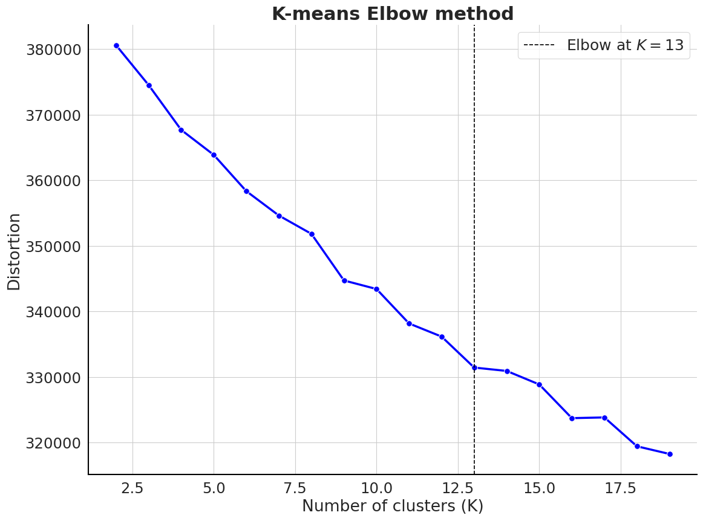

from molcluster.unsupervised_learning.clustering import KMeansClustering, HDBSCANClustering, ButinaClustering, HierarchicalClustering
from molcluster.unsupervised_learning.transform import UMAPTransform, PCATransformmolcluster
A collection of tools to cluster molecules for cheminformatics applications.
How to use
pip install molcluster
You can use any function to generate descriptors for the molecules in the dataset. For instance, we could use Morgan fingerprints from RDkit to generate a vector of 1024 bits for each molecule.
data = pd.read_csv('../data/fxa_processed.csv')X = np.array([Chem.AllChem.GetMorganFingerprintAsBitVect(x, radius=1024) for x in list(map(Chem.MolFromSmiles, data.processed_smiles.values))])Dimensionality reduction
Principal component analysis (PCA)
pca_reducer = PCATransform(X)pca_embeddings = pca_reducer.reduce(n_components=2)
pca_embeddings[0:5]array([[1.2142797 , 0.46797618],
[1.44474151, 0.64233027],
[1.51234623, 0.87651611],
[3.77443183, 1.29613805],
[3.654247 , 1.80719829]])UMAP
umap_reducer = UMAPTransform(X)umap_embeddings = umap_reducer.reduce(n_neighbors=50, min_dist=0.25, metric='euclidean')
umap_embeddings[0:5]array([[ 1.5952768 , 4.4337296 ],
[ 1.5278653 , 4.5167828 ],
[ 1.3860604 , 4.543414 ],
[ 1.7233835 , -1.6080631 ],
[ 0.79702693, -1.1479477 ]], dtype=float32)Clustering
Kmeans clustering with 10 clusters
clustering_kmeans = KMeansClustering(X)
labels = clustering_kmeans.cluster(n_clusters=10)
labels[0:5]array([0, 0, 0, 3, 3], dtype=int32)Using the elbow method to select the optimal number of clusters
clustering_kmeans.elbow_method(n_clusters=np.arange(2, 20))
Butina clustering with similarity threshold > 0.7
mol_list = data.processed_smiles.valuesclustering_butina = ButinaClustering(mol_list)
labels = clustering_butina.cluster(sim_cutoff=0.7)
labels[0:5][34, 34, 34, 1, 131]HDBSCAN clustering
clustering_hdbscan = HDBSCANClustering(X)
labels = clustering_hdbscan.cluster(min_cluster_size=5,min_samples=1,metric='euclidean')np.unique(labels)[0:5]Agglomerative clustering (e.g. using Ward’s method)
clustering_agg = HierarchicalClustering(X)labels = clustering_agg.cluster(n_clusters=None, distance_threshold=0.25, linkage='ward')
labels[0:5]Plotting a dendrogram
clustering_agg.plot_dendrogram(truncate_mode="level", p=5)